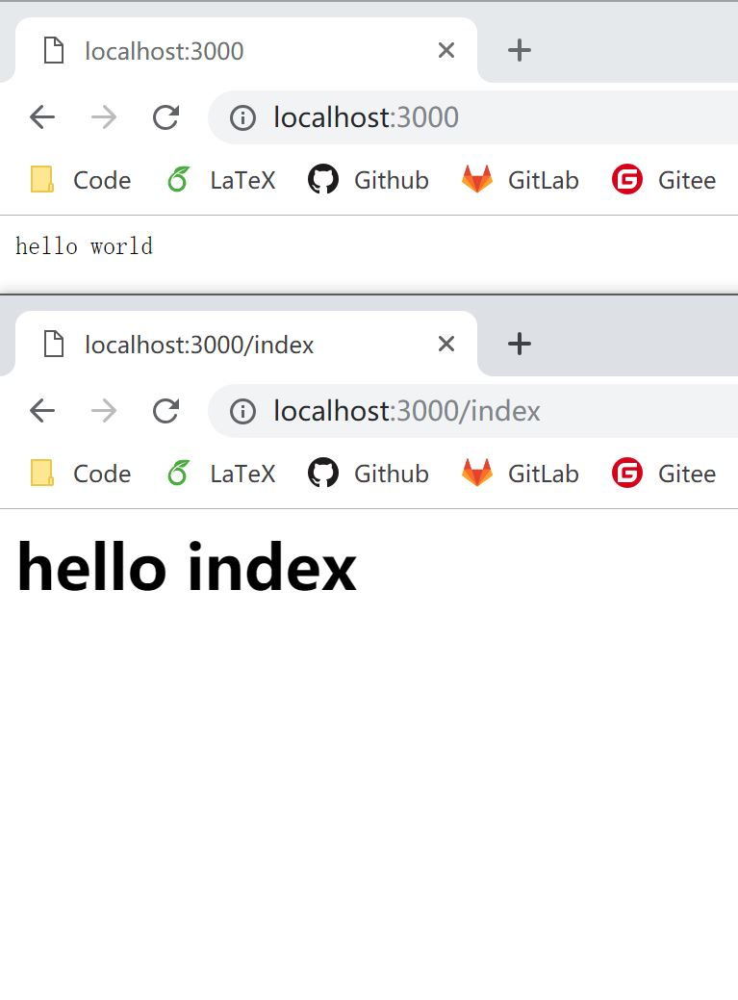

2.2 koa-router
自制的路由，总有一种很傻的感觉，因为每一次我们都需要判断 URL，不正确调用 next，进行下一层处理，直至找到正确的处理函数。
这里，介绍一个别人写好的中间件：koa-router。它可以帮助我们更加关注 URL 处理本身，而无需在编写函数时分心调用顺序等问题。
首先，安装 koa-router
npm install koa-router
来看一个实例：
const koa = require('koa');
const router= require('koa-router')();
const app = new koa();
router.get('/', (ctx, next) => {
ctx.response.body = 'hello world';
});
router.get('/index', (ctx, next) => {
ctx.response.body = `<h1>hello index</h1>`;
});
app.use(router.routes());
app.listen(3000);
再次访问一下： 
有了 koa-router 中间件，我们还可以做更棒的事情：把我们的代码组织的更加有逻辑结构(参照项目重构，初学的小伙伴可以循序渐进~)！